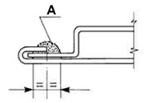

|


|
|
| Service News | ||
|
|
VARIOUS MODELS
all versions |
|
|||
| 7200 0 000 AA |
PAINTING THROUGH REPLACEMENT OR REPAIR OPERATIONS TO PLASTIC COMPONENTS AND PANELS
Operating Cycles - Service Manual Update |
|||

|
Cancels and replaces technical bulletin 70.95.07 (October 1995) and subsequent updates through new Operating Cycles.
FOREWORD
In addition to the information in the Service Manuals for the various models, the following operating cycles are described below:
-Painting panels.-Painting plastic components.-Renewing sound inslation, corrosion protection and sealing.It should be pointed out that all painting operations should be carried out using appropriate equipment.
It is advisable to use the specific environmentally friendly solvents for cleaning the equipment.
There is a silver paintwork identification plate on the vehicle, normally inside the bonnet or the boot lid/tailgate, that contains the original colour identification code for respraying or touching up.
The products used (both those on the plate and recommended by Fiat which may possibly be different) should conform to the laws in force in Italy in terms of safety, hygiene and the environment and, failing this, must meet European Community standards. It is the responsibility of the final user to first of all check that the usage conditions are compatible with the recommendations in the safety documents provided by the supplier.
As far as the practical aspects are concerned, suppliers should certify that the aesthetic/practical features (e.g. mechanical properties, resistance to ageing and protection against corrosion) meet the corporate technical specifications if applied in accordance with the methods indicated in detail in the "product technical chart". Conformity with corporate specifications guarantees that the manufactured article will be in line with the original painting process quality standards.
This certification assumes that the recommendations for the individual products in the Safety Information Chart that the Supplier must give the consumer in accordance with the laws in force in the country (in Italy in line with Legislative Decrees 52/97 and 285/98 and subsequent modifications and additions) are followed to the letter.
Bodywork repairs (panel support)
If a body panel is being replaced, check that dimensions, materials and surface treatment (galvanizing, cataphoresis) of the replacement part conforms to the Manufacturer''s specifications.
 | Visually inspect the condition and the suitability of the replacement panel. If there are small negative bubbles, it is permitted, after straightening (as much as possible) using levers, files, etc., to restore the aesthetic appearance through applying putty and levelling out the defect. It can be applied after cleaning the surface (painting through cataphoresis) near the defect; after hardening completely, dry sand with P 180 - P 220 grade abrasive paper. |
| Take care not to nick/remove the cataphoretic painting. |
Painting a replacement panel secured to the bodywork by welding
| Before spot welding the panels, apply electro-weldable galvanizing protection to the ground edges of the join area (as described in the Service Manual). |
Partial repainting (one or more parts) of the bodywork
-Protect the areas not involved in the painting operating by masking.-Restore the aesthetic appearance (profile and superficial appearance) of the damaged panel. Lastly, level the area worked on using filler which can be applied after cleaning the surface using special detergent if the damage caused has not exposed the panel or, if the panel has been exposed, the corrosion protection should be restored through the local application of the epoxide base coat (see point 6 page 2).-After the filler is completely hard, dry sand using P180 - P220 grade abrasive paper.-Then overhaul the area to be repainted using P150 or P220 grade abrasive paper, extending the perimeter of the area worked on through slight surface shading towards the outside taking care to remove any possible trace of oxidation from the exposed panel.-Remove any residues of dust using compressed air and clean the entire surface using a low VOC detergent or an anti-static product.-If appropriate, seal the joins by applying (mono or twin component) sealant that hardens at ambient temperature.-Apply a filler, prepared previously following the instructions on the product technical chart, by spraying 2 crossover coats, at intervals of a few minutes, until the thickness recommended on the product technical chart is reached (2 - 4 crossover coats). Wait for 10 - 15 minutes at ambient temperature before starting the drying.-Dry the base coat in an oven at a temperature of 40° - 60°C for about 30 - 40 minutes.-Inspect the surface as soon as it has been worked on and remove any defects by dry sanding the surface using P 400 grade abrasive paper.-Remove any residues of dust using compressed air and clean the entire surface using a low VOC detergent and then finish off with an anti-static cloth.-Prepare the enamel (single coat or double coat) and/or transparent resin to be sprayed following the instructions on the product technical chart and use it within the recommended period.-Apply the enamel through 2 crossover coats with a few seconds in between until the desired thickness and colour matching is achieved.-Leave the enamel to dry at ambient temperature following the instructions on the supplier''s technical chart for the time and conditions.-For aesthetic finishes with single coat enamel, dry in the oven at a temperature of 60°C for 40 minutes. Alternatively, dry using an IR ray lamp following the instructions described by the manufacturer (distance of radiant panel from the surface to reticulate, exposure time).-For aesthetic finishes with double coat enamel, apply the transparent resin prepared previously following the instructions given on the technical chart through 2 or 3 crossover coats with a few seconds in between.-Dry in the oven at a temperature of 60°C for 40 minutes. Alternatively, dry using an IR ray lamp following the instructions described by the manufacturer (distance of radiant panel from the surface to reticulate, exposure time).-Polish the surface at least 24 hours after the reticulation (baking) of the last coat (panel cold).Aesthetic painting (three coat cycle) with "nuvola" finish
For aesthetic painting with a "nuvola" finish with three coats of enamel, continue after applying and baking the filler. A special (white) covering enamel undercoat must be applied before the nuvola enamel and the transparent resin for this type of aesthetic finish.
Painting operations on plastic elements
(Polyolephine thermoplastic material (PP) e.g. bumper)
Painting a replacement bumper
When replacing, check that the dimensions, material and surface treatment of the replacement part (black background with solvent or water for adhesion promoter with 3 ± 0.5 gloss with adhesion promoter and aesthetic finish function) conforms to the manufacturer''s technical specifications.
| If there are slight surface defects, the aesthetic appearance can be restored by levelling the defect using filler. This can be applied after cleaning the surface near the defect; after it has hardened completely, dry sand using P 320 - P 400 grade abrasive paper. |
| If anti-static liquids are used, first check the compatibility with the black background because some of them may be particularly aggressive and even cause its removal with the result that the aesthetic finish does not adhere. |
| When removing the masking at the joins between parts that are not painted and those which are, in order to prevent peeling, it is advisable to remove the masking after drying. |
Partial repainting of a bumper
-Blow through with compressed air in the area involved in the repair operation in order to completely remove the aesthetic finish that has been affected.-Mask the areas not being painted in the bodyshell tint.-Apply the adhesion promoter and filler, prepared previously following the instructions on the product technical chart, by spraying 2 crossover coats, at intervals of a few minutes, until the thickness recommended on the product technical chart is reached (2 - 4 crossover coats). Wait for 10 - 15 minutes at ambient temperature before starting the drying.-If necessary, restore the aesthetic appearance (profile and superficial appearance) of the damaged element. Lastly, level the area workedon using filler.-After the filler is completely hard, dry sand using P320 - P400 grade abrasive paper.-Then overhaul the area to be repainted using P150 - P220 grade abrasive paper, extending the perimeter of the area worked on by surface shading towards the outside.-Remove any residues of dust using compressed air and clean the entire surface using a low VOC detergent or an anti-static product.-Dry the base coat at a temperature of 40° - 60°C for about 30 - 40 minutes.-Inspect the surface as soon as it has been worked on and remove any defects by dry sanding the surface using P 400 grade abrasive paper.-Remove any residues of dust using compressed air and clean the entire surface using a low VOC detergent and then finish off with an anti-static cloth.-Prepare the enamel (single coat or double coat) and/or transparent resin to be sprayed following the instructions on the product technical chart and use it within the recommended period.-Apply the enamel through 2 crossover coats with a few seconds in between until the desired thickness and colour matching is achieved.-Leave the enamel to dry at ambient temperature following the instructions on the supplier''s technical chart for the time and conditions.-For aesthetic finishes with single coat enamel, dry in the oven at a temperature of 60°C for 40 minutes. Alternatively, dry using an IR ray lamp following the instructions described by the manufacturer (distance of radiant panel from the surface to reticulate, exposure time).-For aesthetic finishes with double coat enamel, apply the transparent resin prepared previously following the instructions given on the technical chart through 2 or 3 crossover coats with a few seconds in between.-Dry in the oven at a temperature of 60°C for 40 minutes. Alternatively, dry using an IR ray lamp following the instructions described by the manufacturer (distance of radiant panel from the surface to reticulate, exposure time).-Polish the surface using fine abrasive paste and/or polish.Painting a thermohardening plastic component
Thermohardening plastic material (KMC-BMC-SMC) e.g.: tailgate, bonnet
If a thermohardning element is being replaced, check that dimensions, materials and surface treatment (insulating layer) of the replacement part conforms to the Manufacturer''s technical specifications.
Replacement
Visually inspect the condition and suitability for use of the replacement component.
| If there are slight surface defects, the aesthetic appearance can be restored by levelling the defect using filler. This can be applied after cleaning the surface near the defect; after it has hardened completely, dry sand using P 320 - P 400 grade abrasive paper. |
Repairing
-Restore the aesthetic appearance (profile and superficial appearance) of the damaged element.-Blow through the area affected by the repair operation using compressed air.-Level the surface using filler; it can be applied after clearning the surface using special detergent.-After the filler is completely hard, dry sand using P320 - P400 grade abrasive paper.Painting
-Mask the areas not being painted, as appropriate; then overhaul the surface involved using P150 or P220 grade abrasive paper extending the perimeter of the area being worked on, in the case of a repair operation, through surface shading towards the outside.-Remove any residues of dust using compressed air and clean the entire surface using a low VOC detergent or an anti-static product.-Apply the insulating coat, prepared previously following the instructions on the product technical chart, by spraying 2 crossover coats, at intervals of a few minutes, until the thickness recommended on the product technical chart is reached (2 - 4 crossover coats). Wait for 10 - 15 minutes at ambient temperature before starting the drying.-Dry the base coat at a temperature of 40° - 60°C for about 30 - 40 minutes.-Inspect the surface as soon as it has been worked on and remove any defects by dry sanding the surface using P 400 grade abrasive paper.-Remove any residues of dust using compressed air and clean the entire surface using a low VOC detergent and then finish off with an anti-static cloth.-Prepare the enamel (single coat or double coat) and/or transparent resin to be sprayed following the instructions on the product technical chart and use it within the recommended period.-Apply the enamel through 2 crossover coats with a few seconds in between until the desired thickness and colour matching is achieved.-Leave the enamel to dry at ambient temperature following the instructions on the supplier''s technical chart for the time and conditions.-For aesthetic finishes with single coat enamel, dry in the oven at a temperature of 60°C for 40 minutes. Alternatively, dry using an IR ray lamp following the instructions described by the manufacturer (distance of radiant panel from the surface to reticulate, exposure time).-For aesthetic finishes with double coat enamel, apply the transparent resin prepared previously following the instructions given on the technical chart through 2 or 3 crossover coats with a few seconds in between.-Dry in the oven at a temperature of 60°C for 40 minutes. Alternatively, dry using an IR ray lamp following the instructions described by the manufacturer (distance of radiant panel from the surface to reticulate, exposure time).-Polish the surface using fine abrasive paste and/or polish.Painting a thermoplastic component
Thermoplastic material e.g. Mini skirt, Wing
Whe repairing/painting, identify the specific product line for materials with surfaces on which the operation must be carried out. Proceed following the instructions given on the technical charts, following the operating methods described in the previous paragraphs.
Renewing sound insulation, corrosion protection and seals
Replacing or repairing one or more bodywork elements can, in some cases, require the renewal of material applied during the original painting process such as, for example, sound insulation, sealants, underbody protection which may even have been damaged during the actual repair operation.
Equipment required
The following equipment is required for the application of the above materials:
-pneumatic extrusion spray guns-foam injection systems-protective wax based oil injection systemsRepairing a box section
Since the repair operations (welding) carried out near box sections damage the cataphoretic layer on the inside, the anti-corrosion protection must be restored by:
-Applying rust converter to the areas overheated or welded which require drying for at least 24 hours at ambient temperature (20°C);-If, during the above operations. the panel is accidentally uncovered by removing the cataphoretic coating or the zinc the anti-corrosion protection must be restored by spraying a high thickness epoxide layer on the areas concerned.-If present, applying protective wax and rigid type polyurethane foam to the inside of the box section.Application of sealant and underbody protective
-Where appropriate, restore the seal for the joins by applying as a bead or using a brush.-Carry out the sealing, following the instructions below, on the flanges of the replacement moving parts (tailgates, doors, boots and bonnets):-clean the areas involved using heptane or antisilicon/antistatic solvents;-Apply sealant that hardens at ambient temperature as illustrated in A of Fig. 1.Fig.1 - Example of application of sealant on flanges

AVALABILITY OF PARTS
|
Version |
Description |
Part No. |
Qty. |
|
all versions in question |
P.U. foam for box section sound insulation |
71739588 |
1 |
| For the use of chemical products closely follow the instructions and warnings on the safety chart that the supplier must give the consumer in accordance with the laws in force in the area (for Italy in accordance with Legislative Decrees 52/97 and 285/98 and subsequent modifications and additions). |